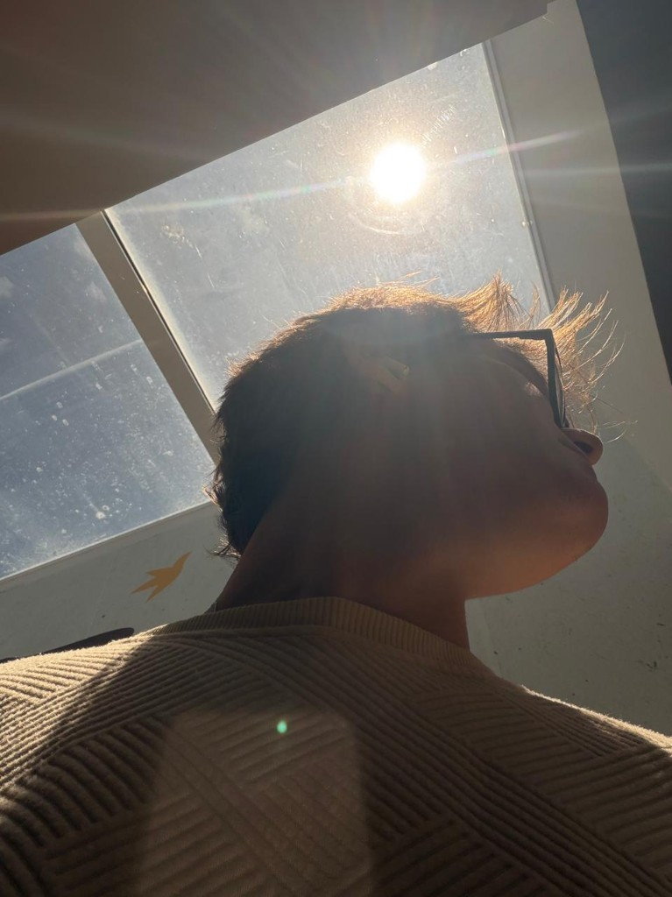

Lucas Marques
Design Engineer
Bacharel em Computação com mais de 5 anos de experiência construindo interfaces. Trabalho atualmente na CESAR e dou consultoria para empresas do exterior — unindo engenharia e design para criar produtos que parecem inevitáveis.
Meu foco está na interseção entre código e craft: componentes acessíveis, animações com propósito e detalhes invisíveis que fazem a diferença quando somados.
Experiência
-
CESAR — Software Engineer
2020 — PresenteAtuo na interseção entre design e código — construindo componentes, protótipos de alta fidelidade e interfaces com foco em craft, performance e consistência visual.
-
CESAR School — Professor
2023 — 2024Lecionei no curso NeXT, ensinando desenvolvimento frontend para alunos de diferentes níveis — do básico ao avançado.
Projetos
Contato
Você pode ver mais do meu código no GitHub e me conectar no LinkedIn.